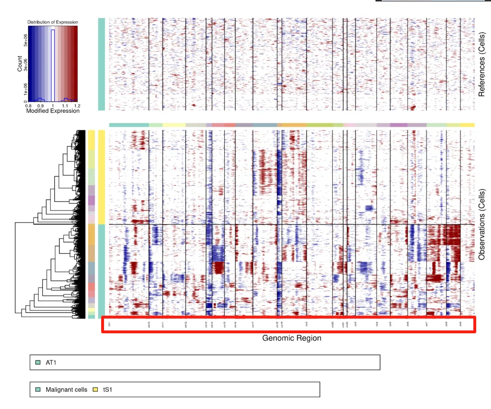
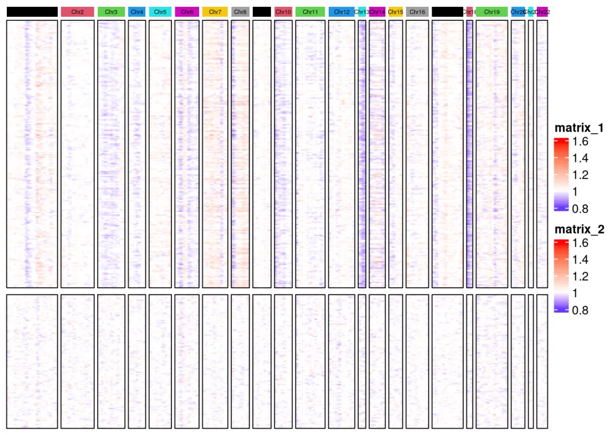

大家有没有发现infercnv的这个小bug
原文：https://mp.weixin.qq.com/s?__biz=MzAwMzIzOTk5OQ==&mid=2247530697&idx=1&sn=1e10a4463fdb93534b99aa2bfc9d947e&chksm=9b3c0199ac4b888f521354e415c7be5d563d796625d2b405e1d8633df33541650e9f6a1bee6b#rd 合集：单细胞教程全收录
一、写在前面
不知道大家有没有发现，此前在我们的肿瘤异质性分析必备| 一文学会四种scRNA-seq拷贝数变异分析中，无论是infercnv默认函数绘制的热图有一些小问题：

大家看一下上图的纵坐标，标注的染色体名称是chr1、chr10、chr11、chr12……..、chr2、chr20、chr21、chr22、chr3。显然这是R语言默认以字符串 格式对染色体排序的结果，计算机在处理字符串时，会逐个字符地比较它们的编码（如ASCII或Unicode），而不是将数字作为一个整体来理解其数值大小。我们来拆解一下字符串 “chr1”, “chr11”, “chr2” 的比较过程：
比较前三个字符：均以’chr’开头，平局。
比较第四个字符： “chr1”的第四个字符是’1’
“chr11”的第四个字符是’1’
“chr2”的第四个字符是’2’
在ASCII码表中，字符’1’的编码是49，字符’2’的编码是50。
因为’1’(49) < ‘2’(50)，所以所有以’1’开头的字符串都会排在以 ‘2’ 开头的字符串之前，这就造成了chr11排在chr2之前。
但按照生物学意义来说，正确的顺序应该是：
paste0('chr',1:22)
## [1] "chr1" "chr2" "chr3" "chr4" "chr5" "chr6" "chr7" "chr8" "chr9"
## [10] "chr10" "chr11" "chr12" "chr13" "chr14" "chr15" "chr16" "chr17" "chr18"
## [19] "chr19" "chr20" "chr21" "chr22"
因此，我们在自行绘制热图时需要做出一定的修改.
二、热图优化
这部分不理解的同学可以参考这个教程手把手学会四种scRNA-seq拷贝数变异分析
# 加载R包：
library(dplyr)
library(infercnv)
library(ComplexHeatmap)
library(RCircos)
library(circlize)
# 继续可视化：
infercnv_obj =readRDS("Epi_infercnv/output/run.final.infercnv_obj")# 读取运行好的infercnv对象
expr <- infercnv_obj@expr.data# 取出infercnv评分数据
# 获取参考/待测细胞的索引：
normal_loc <- infercnv_obj@reference_grouped_cell_indices# 正常参考细胞的索引
normal_loc <- normal_loc$AT1
test_loc <- infercnv_obj@observation_grouped_cell_indices# 待测细胞的索引
test_loc <-c(test_loc$tS1,test_loc$`Malignant cells`)
# 把之前写到本地的分组信息读回来
anno.df=read.table('Epi_infercnv/groupFiles.txt',header = F,sep ='\t')
colnames(anno.df)[1] <-'CB'
# 读取并整理此前保存的基因坐标信息：
geneFile <-read.table("Epi_infercnv/geneLocate.txt",header = F,sep ="\t",stringsAsFactors = F)
rownames(geneFile)=geneFile$V1# 将基因名设置为行名
co_gene <-intersect(rownames(expr),geneFile$V1)# 表达矩阵和基因注释文件都存在的基因
sub_geneFile <- geneFile[co_gene,]# 取出基因注释文件的交集
expr=expr[co_gene,]# 取出表达矩阵的交集
#聚类，7类，提取结果
set.seed(2024)
kmeans.result <-kmeans(t(expr), 7)# 完成kmeans聚类
kmeans_df <-data.frame(kmeans_class=kmeans.result$cluster)# 取出聚类的cluster信息并转化为数据框
kmeans_df$CB=rownames(kmeans_df)# 设置行名为新的一列，即cell barcode
kmeans_df=kmeans_df%>%inner_join(anno.df,by="CB") # 按照barcode合并分组注释文件与聚类结果
kmeans_df_s=arrange(kmeans_df,kmeans_class) # 按照聚类结果进行排序
rownames(kmeans_df_s)=kmeans_df_s$CB# 设置行名为cell barcode
kmeans_df_s$CB=NULL# 后面用不到cellbarcode了，将这行删除
kmeans_df_s$kmeans_class=as.factor(kmeans_df_s$kmeans_class)# 聚类结果是数字，需要转换为因子，否则后面热图注释会报错
colnames(kmeans_df_s)[2] <-'Sub_type'# 改变第二列的列名
#将kmeans_class转换为因子，作为热图的一个注释，最终在热图上就会按照数字大小排序
head(kmeans_df_s)
## kmeans_class Sub_type
## AAACGGGAGGCGCTCT_NS_12 1 Malignant cells
## AATCGGTAGCGTAGTG_NS_12 1 Malignant cells
## ACATACGTCGTGGGAA_NS_12 1 Malignant cells
## ACCTTTAAGATCACGG_NS_12 1 Malignant cells
## ACGAGGAGTAGGGACT_NS_12 1 Malignant cells
## ACGAGGATCTGCCCTA_NS_12 1 Malignant cells
###### 绘制热图 #####
# 热图这部分代码看不懂的同学请先行学习：https://mp.weixin.qq.com/s/QHFicwAqkIsTykOqIHGSiQ
# 为演示染色体注释的差别，侧栏细胞注释我们就不绘制了
# 顶部注释：
top_anno <-HeatmapAnnotation(foo =anno_block(gp =gpar(fill =1:22, col ="NA"),
labels =paste0('Chr',1:22),
labels_gp =gpar(cex =0.4,rot =45)),
annotation_height =unit(0.3, "cm")) # 调整注释的高度
color_v=RColorBrewer::brewer.pal(8, "Dark2")[1:7] #类别数
names(color_v)=as.character(1:7)
# 读取分组分拣
group_info <-read.table('Epi_infercnv/groupFiles.txt')
# 恶性细胞cnv_score：
malignant_tS1_data <- expr[,
group_info$V1[group_info$V2 %in%c("Malignant cells", "tS1")]
]
# 正常细胞cnv_score：
AT1_data <- expr[,group_info$V1[group_info$V2 %in%c("AT1")] ]
# 配色方案：
my_fn <-fivenum(expr)# 返回最低值、下四分位数、中位数，上四分位数、最大值
col_fun <-colorRamp2(c(my_fn[1], my_fn[3], my_fn[5]), c("#0000FF", "#FFFFFF", "#FF0000"))# 确定最低值、中位数、最高值的颜色分配方案
# 读回第一步创建的基因注释文件：
geneInfor <-read.table( 'Epi_infercnv/geneLocate.txt')
# 查看文件
head(geneInfor)
## V1 V2 V3 V4
## 1 AP006222.2 chr1 266855 268655
## 2 FAM87B chr1 817371 819837
## 3 LINC00115 chr1 826206 827522
## 4 FAM41C chr1 868071 876903
## 5 SAMD11 chr1 923928 944581
## 6 NOC2L chr1 944203 959309
# 查看文件行列数
dim(geneInfor)
## [1] 20363 4
# 过滤，保留与表达矩阵共同的基因：
geneInfor <-filter(geneInfor,V1 %in% co_gene)
# 查看现在的基因注释：
dim(geneInfor)
## [1] 7292 4
# 生成“数值型”染色体：
geneInfor$num_chr <-gsub('chr','',geneInfor$V2) %>%as.numeric()
# 看看现在的基因注释信息：
head(geneInfor)
## V1 V2 V3 V4 num_chr
## 1 NOC2L chr1 944203 959309 1
## 2 HES4 chr1 998962 1000172 1
## 3 ISG15 chr1 1001138 1014540 1
## 4 AGRN chr1 1020120 1056118 1
## 5 TNFRSF18 chr1 1203508 1206592 1
## 6 SDF4 chr1 1216908 1232067 1
# 以数值型进行排序：
geneInfor <- geneInfor[order(geneInfor$num_chr),]
# 热图1：Malignant cells + tS1的cnvscore热图
ht1 <-Heatmap(t(malignant_tS1_data)[,geneInfor$V1], col = col_fun,
cluster_rows =FALSE, cluster_columns =FALSE,
show_column_names =FALSE, show_row_names =FALSE,
top_annotation = top_anno,
column_split =factor(geneInfor$num_chr),
border =TRUE ,# 添加边框
column_title =NULL)
## `use_raster` is automatically set to TRUE for a matrix with more than
## 2000 columns You can control `use_raster` argument by explicitly
## setting TRUE/FALSE to it.
##
## Set `ht_opt$message = FALSE` to turn off this message.
# 热图2：AT1的cnv score热图
ht2 <-Heatmap(t(AT1_data)[,geneInfor$V1], col = col_fun,
cluster_rows =FALSE, cluster_columns =FALSE,
show_column_names =FALSE, show_row_names =FALSE,
column_split =factor(geneInfor$num_chr),
border =TRUE , # 添加边框
show_column_dend =FALSE# 关闭column_split标签
)
## `use_raster` is automatically set to TRUE for a matrix with more than
## 2000 columns You can control `use_raster` argument by explicitly
## setting TRUE/FALSE to it.
##
## Set `ht_opt$message = FALSE` to turn off this message.
# 把两张热图拼接起来
draw(ht1 %v% ht2, heatmap_legend_side ="right")

完整测试数据与教程可见：肿瘤异质性分析必备| 一文学会四种scRNA-seq拷贝数变异分析
三、演示环境
一切不给测试文件和分析环境版本的教程都是耍流氓，本推送的代码和测试文件可以在以下链接中下载：
通过网盘分享的文件: https://pan.baidu.com/s/1lsZRUwUTfB0AqmjaVOB6JQ?pwd=ieyg
提取码: ieyg
R语言演示环境(趁开学前| 入手足够完成硕博生涯的生信环境)：
sessionInfo()
## R version 4.4.2 (2024-10-31)
## Platform: x86_64-pc-linux-gnu
## Running under: Ubuntu 20.04.4 LTS
##
## Matrix products: default
## BLAS: /usr/lib/x86_64-linux-gnu/openblas-pthread/libblas.so.3
## LAPACK: /usr/lib/x86_64-linux-gnu/openblas-pthread/liblapack.so.3; LAPACK version 3.9.0
##
## locale:
## [1] LC_CTYPE=en_US.UTF-8 LC_NUMERIC=C
## [3] LC_TIME=en_US.UTF-8 LC_COLLATE=en_US.UTF-8
## [5] LC_MONETARY=en_US.UTF-8 LC_MESSAGES=en_US.UTF-8
## [7] LC_PAPER=en_US.UTF-8 LC_NAME=C
## [9] LC_ADDRESS=C LC_TELEPHONE=C
## [11] LC_MEASUREMENT=en_US.UTF-8 LC_IDENTIFICATION=C
##
## time zone: Etc/UTC
## tzcode source: system (glibc)
##
## attached base packages:
## [1] grid stats graphics grDevices utils datasets methods
## [8] base
##
## other attached packages:
## [1] circlize_0.4.16 RCircos_1.2.2 ComplexHeatmap_2.12.1
## [4] infercnv_1.23.0 dplyr_1.1.4
##
## loaded via a namespace (and not attached):
## [1] RcppAnnoy_0.0.22 splines_4.4.2
## [3] later_1.4.1 bitops_1.0-9
## [5] tibble_3.2.1 polyclip_1.10-7
## [7] fastDummies_1.7.5 lifecycle_1.0.4
## [9] fastcluster_1.2.6 edgeR_4.4.1
## [11] doParallel_1.0.17 globals_0.16.3
## [13] lattice_0.22-6 MASS_7.3-64
## [15] magrittr_2.0.3 limma_3.62.2
## [17] plotly_4.10.4 sass_0.4.9
## [19] rmarkdown_2.29 jquerylib_0.1.4
## [21] yaml_2.3.10 httpuv_1.6.15
## [23] Seurat_5.2.1 sctransform_0.4.1
## [25] spam_2.11-1 sp_2.2-0
## [27] spatstat.sparse_3.1-0 reticulate_1.43.0.9001
## [29] cowplot_1.1.3 pbapply_1.7-2
## [31] RColorBrewer_1.1-3 multcomp_1.4-28
## [33] abind_1.4-8 zlibbioc_1.52.0
## [35] Rtsne_0.17 GenomicRanges_1.58.0
## [37] purrr_1.0.2 BiocGenerics_0.52.0
## [39] TH.data_1.1-3 sandwich_3.1-1
## [41] GenomeInfoDbData_1.2.13 IRanges_2.40.1
## [43] S4Vectors_0.44.0 ggrepel_0.9.6
## [45] irlba_2.3.5.1 listenv_0.9.1
## [47] spatstat.utils_3.1-4 openintro_2.5.0
## [49] airports_0.1.0 goftest_1.2-3
## [51] RSpectra_0.16-2 spatstat.random_3.4-1
## [53] fitdistrplus_1.2-2 parallelly_1.42.0
## [55] codetools_0.2-20 coin_1.4-3
## [57] DelayedArray_0.32.0 shape_1.4.6.1
## [59] tidyselect_1.2.1 futile.logger_1.4.3
## [61] UCSC.utils_1.2.0 farver_2.1.2
## [63] rjags_4-16 matrixStats_1.5.0
## [65] stats4_4.4.2 spatstat.explore_3.4-3
## [67] jsonlite_1.8.9 GetoptLong_1.0.5
## [69] progressr_0.15.1 ggridges_0.5.6
## [71] survival_3.8-3 iterators_1.0.14
## [73] foreach_1.5.2 tools_4.4.2
## [75] ica_1.0-3 Rcpp_1.0.14
## [77] glue_1.8.0 gridExtra_2.3
## [79] SparseArray_1.6.0 xfun_0.50
## [81] MatrixGenerics_1.18.1 GenomeInfoDb_1.42.1
## [83] formatR_1.14 fastmap_1.2.0
## [85] caTools_1.18.3 digest_0.6.37
## [87] parallelDist_0.2.6 R6_2.5.1
## [89] mime_0.12 colorspace_2.1-1
## [91] Cairo_1.6-1 scattermore_1.2
## [93] gtools_3.9.5 tensor_1.5
## [95] spatstat.data_3.1-6 tidyr_1.3.1
## [97] generics_0.1.3 data.table_1.16.4
## [99] usdata_0.3.1 httr_1.4.7
## [101] htmlwidgets_1.6.4 S4Arrays_1.6.0
## [103] uwot_0.2.2 pkgconfig_2.0.3
## [105] gtable_0.3.6 modeltools_0.2-23
## [107] lmtest_0.9-40 SingleCellExperiment_1.28.1
## [109] XVector_0.46.0 htmltools_0.5.8.1
## [111] dotCall64_1.2 clue_0.3-66
## [113] SeuratObject_5.0.2 scales_1.3.0
## [115] Biobase_2.66.0 png_0.1-8
## [117] phyclust_0.1-34 spatstat.univar_3.1-3
## [119] knitr_1.49 lambda.r_1.2.4
## [121] rstudioapi_0.17.1 rjson_0.2.23
## [123] tzdb_0.4.0 reshape2_1.4.4
## [125] coda_0.19-4.1 nlme_3.1-168
## [127] GlobalOptions_0.1.2 cachem_1.1.0
## [129] zoo_1.8-12 stringr_1.5.1
## [131] KernSmooth_2.23-26 parallel_4.4.2
## [133] miniUI_0.1.1.1 libcoin_1.0-10
## [135] pillar_1.10.1 vctrs_0.6.5
## [137] gplots_3.2.0 RANN_2.6.2
## [139] promises_1.3.2 xtable_1.8-4
## [141] cluster_2.1.8 evaluate_1.0.3
## [143] magick_2.7.3 readr_2.1.5
## [145] locfit_1.5-9.11 mvtnorm_1.3-3
## [147] cli_3.6.3 compiler_4.4.2
## [149] futile.options_1.0.1 rlang_1.1.5
## [151] crayon_1.5.3 future.apply_1.11.3
## [153] argparse_2.2.5 plyr_1.8.9
## [155] stringi_1.8.4 viridisLite_0.4.2
## [157] deldir_2.0-4 munsell_0.5.1
## [159] lazyeval_0.2.2 spatstat.geom_3.4-1
## [161] Matrix_1.7-2 RcppHNSW_0.6.0
## [163] hms_1.1.3 patchwork_1.3.0
## [165] future_1.34.0 ggplot2_3.5.1
## [167] statmod_1.5.0 shiny_1.10.0
## [169] SummarizedExperiment_1.36.0 ROCR_1.0-11
## [171] igraph_2.1.4 RcppParallel_5.1.10
## [173] bslib_0.9.0 cherryblossom_0.1.0
## [175] ape_5.8-1

如何联系我们

 留一个领取资料、开箱即用的单细胞分析镜像的微信号[Biomamba_zhushou]，方便各位随时交流。同时我们也构建了交流群矩阵，欢迎大家入群讨论。
大家可以阅读完这几篇之后添加给生信入门初学者的小贴士
没有检索，就没有发言权
留一个领取资料、开箱即用的单细胞分析镜像的微信号[Biomamba_zhushou]，方便各位随时交流。同时我们也构建了交流群矩阵，欢迎大家入群讨论。
大家可以阅读完这几篇之后添加给生信入门初学者的小贴士
没有检索，就没有发言权
已有生信基地联系方式的同学无需重复添加

 您点的每个赞和在看，我都认真当成了喜欢
您点的每个赞和在看，我都认真当成了喜欢